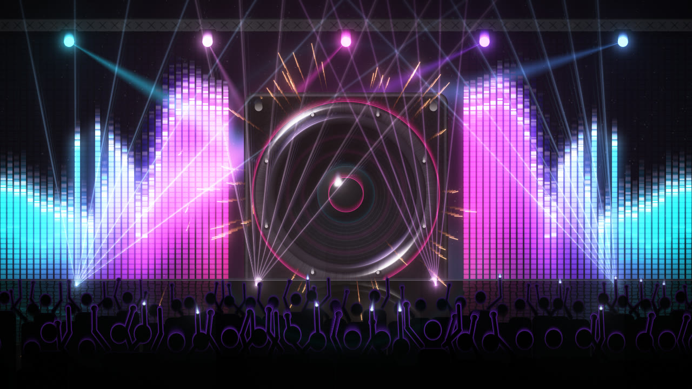
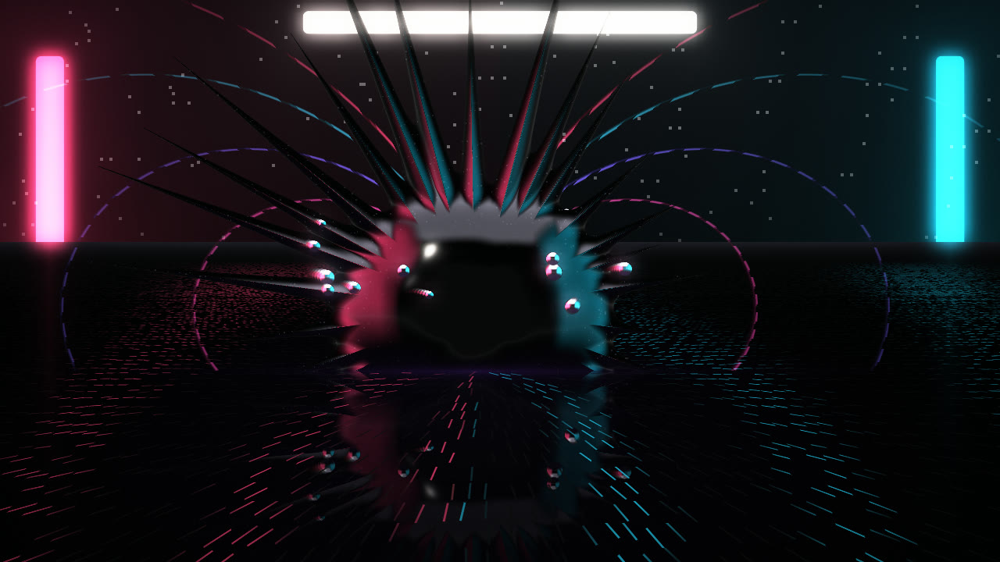
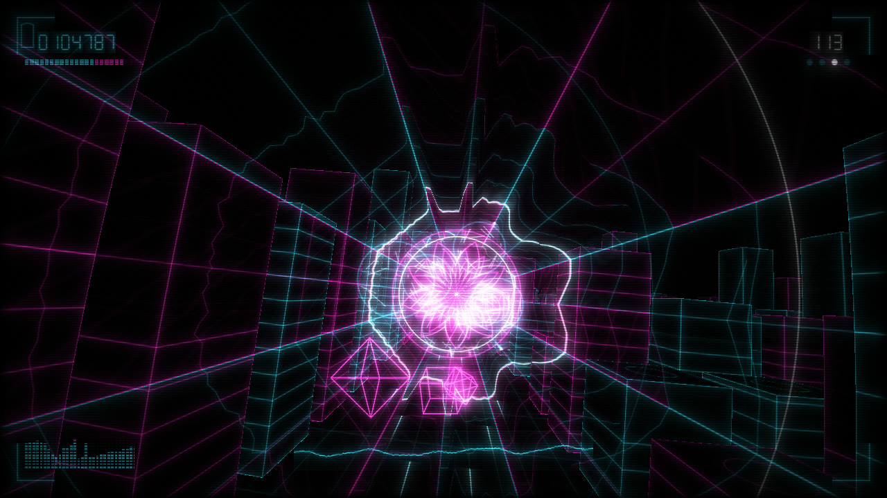
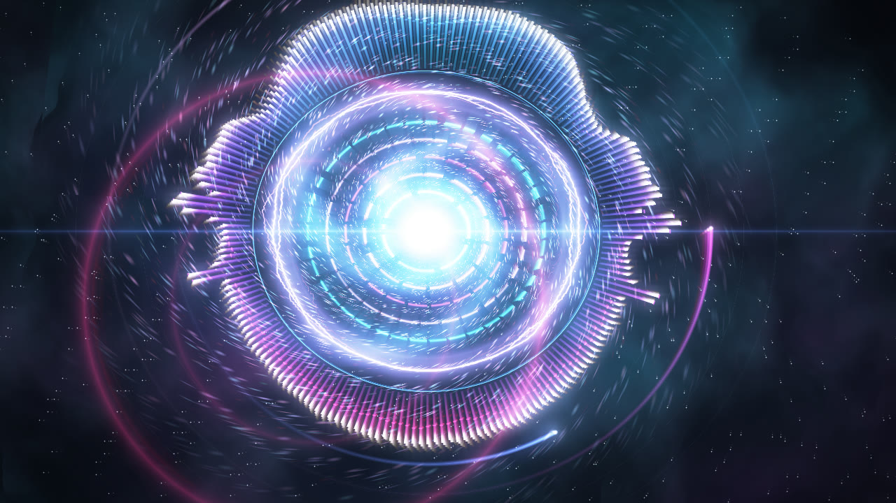
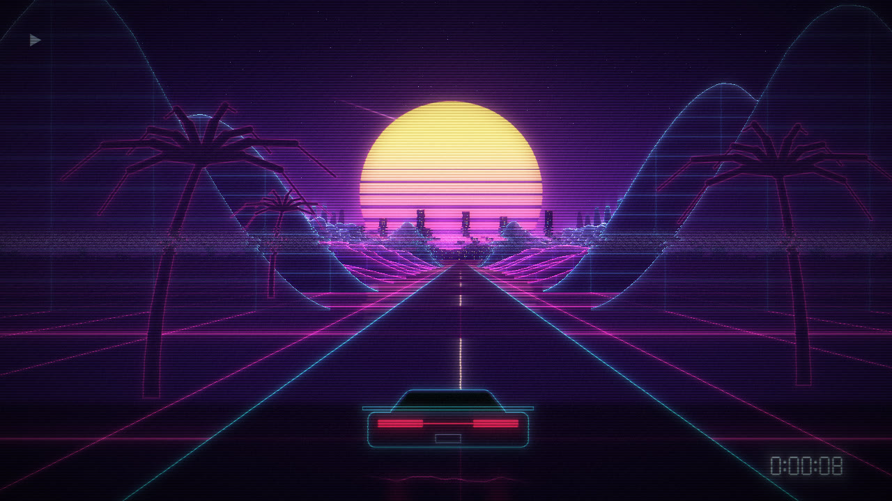
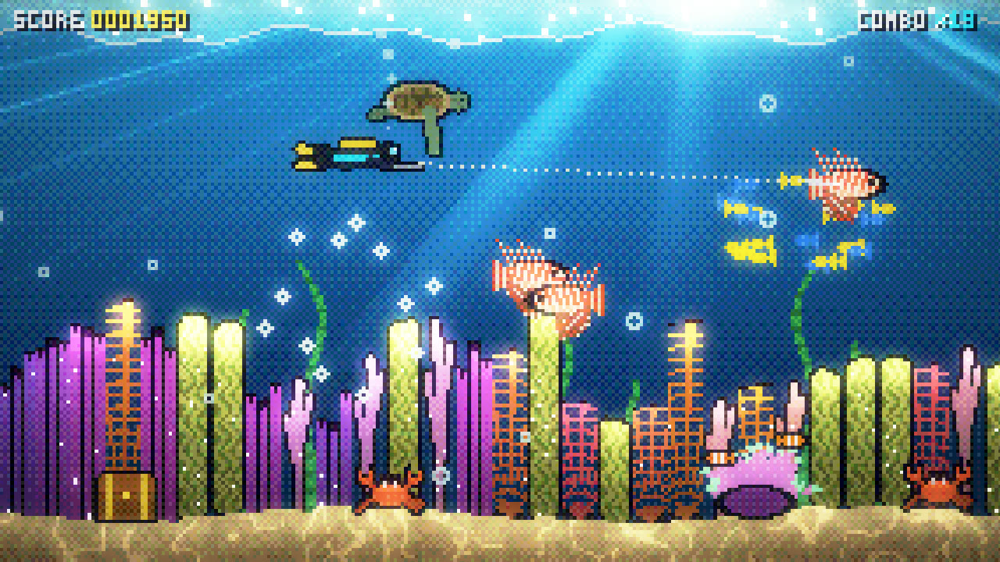
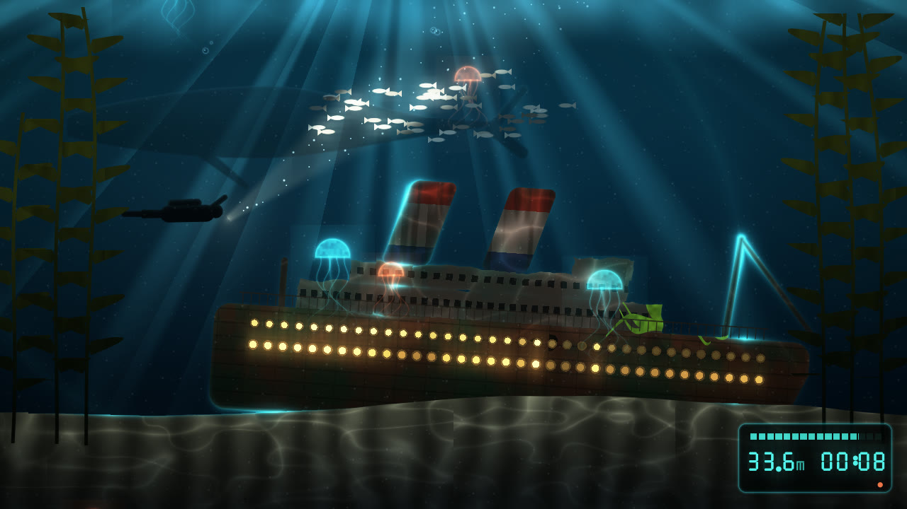
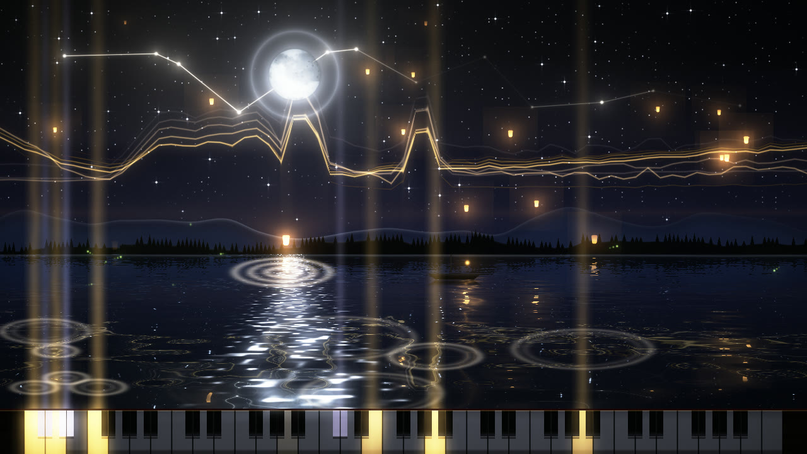
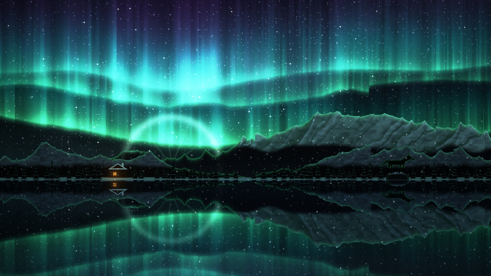
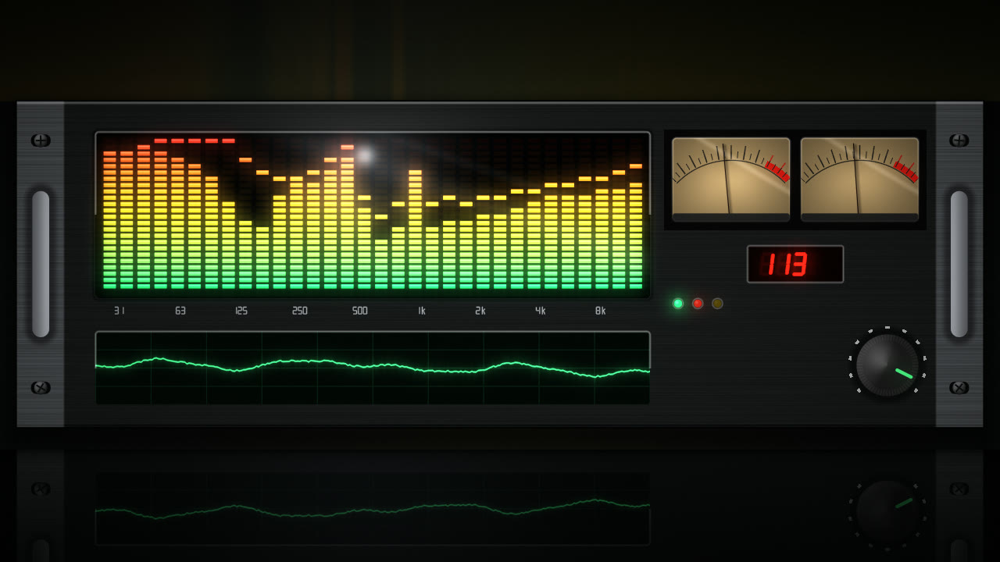

Bass Drop
A club for heavy bass. The woofer pumps with the sub, lasers and moving heads cut through haze, and the crowd jumps on the beat.
Ten hand-built GPU worlds that react to every part of whatever you're playing: the kick, the snare, the hi-hats, the tempo, and the drop.
Every look is a single WGSL fragment shader running on your GPU, about half a millisecond a frame. They stay full of detail even at 4K full screen.

A club for heavy bass. The woofer pumps with the sub, lasers and moving heads cut through haze, and the crowd jumps on the beat.

Glossy magnetic liquid on a mirror floor. The spectrum spikes out of it, field lines spin, and iron filings stand up with the bass.

Negative line art: fly down a data tunnel over a wireframe city. Viruses get deleted on the kick, and a bitstream worm lunges on the drop.

A reactor core: a spectrum crown, a ring drawn from the real waveform, spinning arc rings, a particle vortex and shockwaves.

Synthwave. Mountains are built from the last few seconds of music. Includes a striped sun, a racing grid, a car, palms and VHS.

Pixel art. The coral is the spectrum, a diver spears lionfish on the beat, and a boss shows up on the drop. The score counts the beats.

An ocean liner on the sea floor. Its portholes are the spectrum, and sonar pings land on the beat. A diver's torch, a whale and jellyfish fill the water.

A night lake under the moon. The keyboard lights up the notes actually being played, and each one ripples across the water.

Northern lights over snowy peaks and a mirror lake. Each curtain follows its own band of the music, and a wolf howls on the drop.

A hi-fi rack: LED spectrum analyser with peak hold, twin VU meters, a phosphor scope and seven-segment readouts.
A real-time analyzer splits the music into separate signals, and every look gives each one its own job.
The browser version runs the exact same shaders with WebGPU (Chrome or Edge). Mouse control works too: press M, then move and click.
// shaders/looks/my_look.wgsl: a whole look // name: My Look // palette: #ff2fa6 #8a3cff #22e0ff fn look(fc: vec2f) -> vec4f { let p = centered(fc); let r = 0.35 + 0.25 * G.kick // punch on the kick + 0.1 * spec(fract(atan2(p.y, p.x) / TAU)); var col = pal(G.beat_phase) * glow(abs(length(p) - r), 0.02); col += vec3f(G.drop) * 0.3; // flash on the drop return vec4f(col, 1.0); }